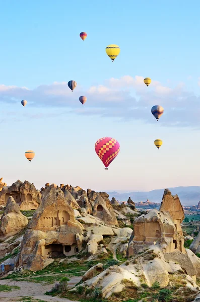
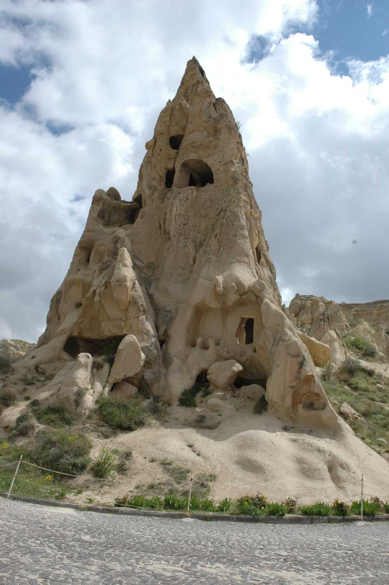
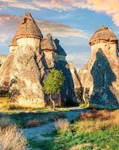

Bu gezi rehberi sitesi, Türkiye'nin en güzel 5 yerini tanıtmaktadır.
Kapadokya'nın simgesi olan ve doğal erozyon ile oluşmuş olan peri bacalarını görebileceğiniz alan.
Erken Hristiyanlık dönemine ait kilise, şapel ve manastırların bulunduğu tarihi bir alan.
Kapadokya'nın en yüksek noktasında bulunan ve harika bir manzaraya sahip olan tarihi kale.
